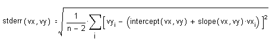

stderr(vx,vy) Returns the standard error associated with
a linear regression for the points in vx
and vy. Measures how closely data points are spread about
the regression line using the formula:

where n = rows (vx) = rows (vy).
Arguments:
vx and vy are vectors of real
data values of the same length, having at least three entries each.
Notes:
To further analyze your data, or determine the suitability of a linear regression,
you may wish to apply other statistics
functions for data analysis.